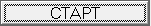
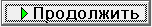
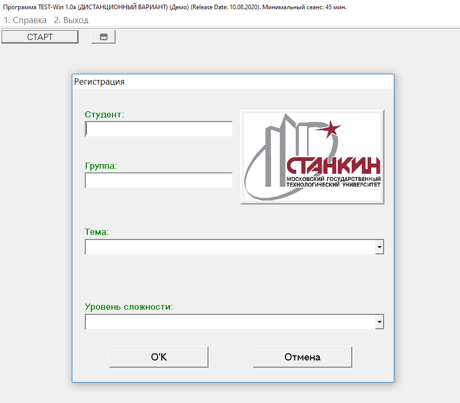
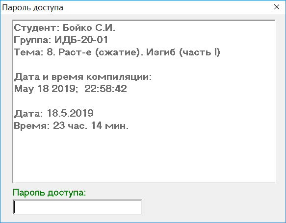
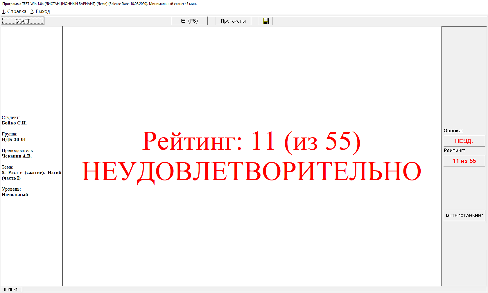
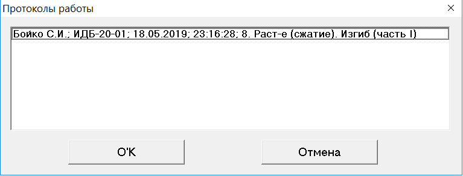
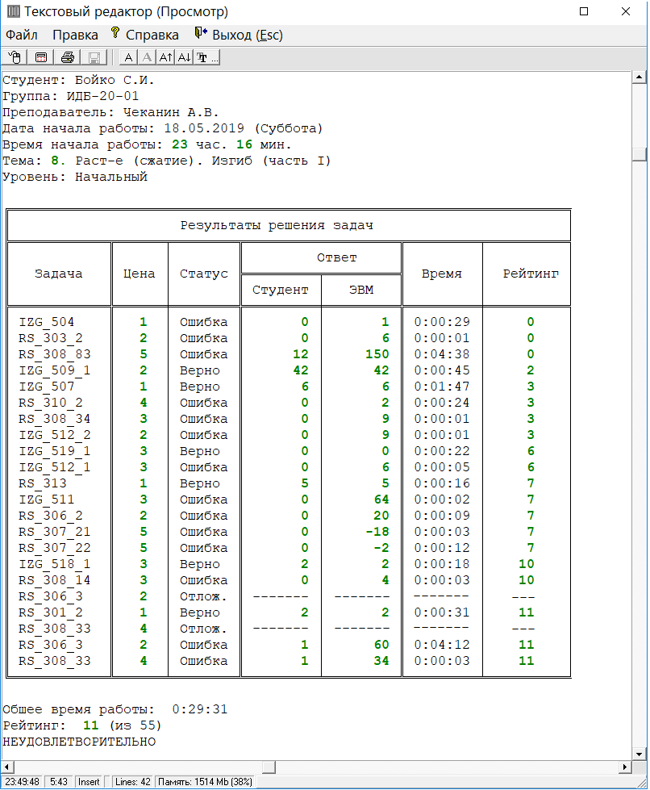
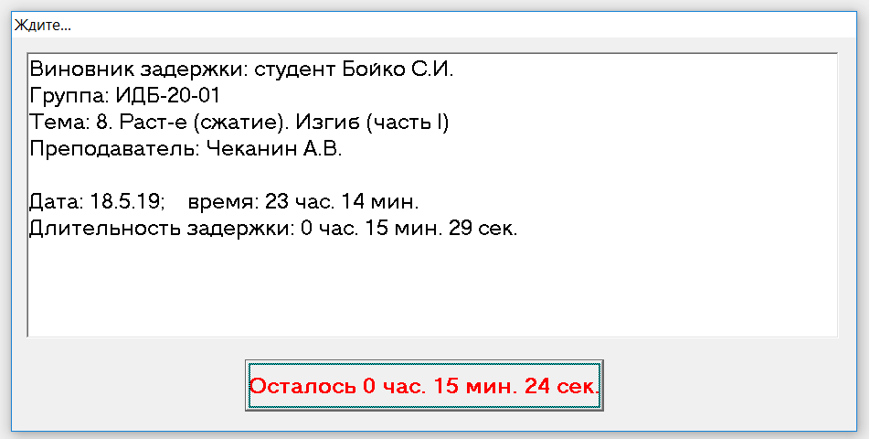
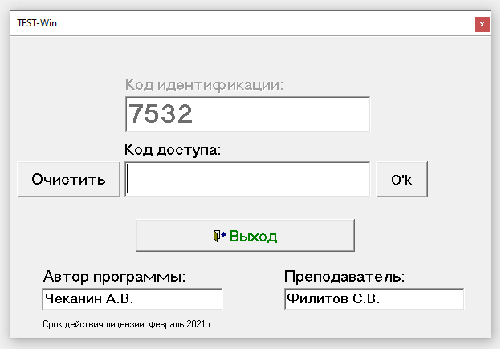

Дополнительные органы управления
главного окна программы
Регистрация пользователя программы
Максимальное значение рейтинга пользователя
Время тестирования. Длительность задержки
ДИСТАНЦИОННЫЙ ВАРИАНТ ПРОГРАММЫ
После старта программы появляется окно-приглашение к работе (рис. 1).
Рис. 1
Главное меню программы имеет две позиции: «1. Справка» и «2. Выход» (рис. 2).
Выбор позиции подменю «1. Руководство пользователя» приводит к вызову данного руководства пользователя программы.
Рис. 2
При выборе позиции подменю «2. Условные обозначения» (рис. 3) выводится информация об условных обозначениях, используемых в программе (рис. 4).
Рис. 3
Рис. 4
При выборе позиции подменю «3. О программе…» (рис. 5) появляется окно с информацией о программе (рис. 6).
Рис. 5
Рис. 6
Выбор позиции «2. Выход» (рис. 7) главного меню программы приводит к завершению работы программы.
Рис. 7
Дополнительные органы управления
главного окна программы
Управляющие кнопки:
1)

– начало работы программы;2) – вызов встроенного калькулятора (альтернативный вызов - клавиша клавиатуры <F5>);
3) (рис. 7, рис. 15) – вывод на экран протоколов работы над заданием (рис. 17);
4)

(рис. 14) – переход к следующему этапу работы;5) – «Отложить решение текущей задачи» (рис. 11) (альтернативный вызов - клавиша клавиатуры <F10>);
6) (рис. 1, рис. 15) – вывод результатов работы в файл с целью дальнейшей отправки преподавателю.
Регистрация пользователя программы
Нажатие на кнопку (начало работы программы) приводит к появлению окна регистрации пользователя (рис. 8).

Рис. 8
Пример заполненного окна регистрации программы представлен на рис. 9.
Рис. 9
После регистрации пользователя появляется меню ввода пароля доступа к работе (рис. 10). Пароль вводится преподавателем. Ответственность за сохранение информации о пароле возлагается персонально на преподавателя. Информация о преподавателе, содержащаяся в пароле, автоматически регистрируется программой.

Рис. 10
Максимальное значение рейтинга пользователя
В зависимости от версии программы, набора задач и уровня сложности, устанавливается различное максимальное значение рейтинга пользователя (обучающегося). Например, на рис. 11 и рис. 15 показано максимальное значение рейтинга, равное 55.
После ввода пароля программа переходит в режим выполнения задания (рис. 11).
Рис. 11
Цифрами на рис. 11 обозначены:
1 – общее время работы над заданием;
2 – время работы над решением текущей задачи;
3 – («Работаем…», «Верно», «ОШИБКА») – информация о режиме ожидания ввода ответа, а также о корректности ответа;
4 – размерность вводимого ответа;
5 – поле ввода ответа (в данном случае ожидается ввод положительного числа; в случае если результат решения задачи может быть как положительным, так и отрицательным, под полем ввода ответа будет выведен комментарий «С учётом знака!»);
6 – текущая оценка («Неуд.», «Удовл.», «Хорошо» или «Отлично»);
7 – текущий рейтинг пользователя;
8 – текущий номер решаемой задачи (дополнительно выводится общее число задач в задании);
9 – цена задачи (в случае правильного решение цена текущей задачи прибавляется к рейтингу пользователя; в противном случае рейтинг пользователя не изменяется).
Каждую из решаемых задач можно временно отложить по одному разу, нажав на кнопку «Отложить решение текущей задачи» (альтернативный вызов – клавиша клавиатуры <F10>) приводит к переходу к решению следующей задачи. В конце задания программой вместо отложенной задачи будет предложена аналогичная по теме и сложности задача (рис. 12).
Рис. 12
Цифрами на рис. 12 обозначены:
1 – поле
вывода информации о том, что на экране представлена ранее отложенная задача
(если в этом режиме попытаться повторно отложить задачу, то появится сообщение
о невозможности выполнения этой команды (рис. 13)).
Рис. 13
Результат решения задачи фиксируется путем ввода его в поле ввода ответа с последующим нажатием на клавишу клавиатуры <Enter>. После этого на экране будет представлена информация об итогах решения задачи и последующих действиях пользователя программы (рис. 14).
Рис. 14
Для перехода к следующему этапу работы необходимо либо нажать левой кнопкой мыши на расположенную в верхней части экрана кнопку (рис. 14), либо нажать клавишу клавиатуры <Enter> (по умолчанию в данный момент времени фокус программы находится на кнопке ).
После решения всех задач задания выводится результирующая информация об итогах выполнения задания (рис. 15).

Рис. 15
Информацию о ходе выполнения задания и результатах решения задач можно посмотреть, открыв соответствующий протокол решения задач. Для этого необходимо нажать на кнопку . В результате появится список выполненных заданий (рис. 16), из которого необходимо сделать соответствующий выбор.

Рис. 16
В результате будет выведен протокол выполнения этого задания (рис. 17).

Рис. 17
В колонках представленной на рисунке таблице содержится следующая информация:
«Задача» – буквенно-цифровой код задачи;
«Цена» ‑ цена задачи;
«Статус» – статус операции: «Ошибка» ‑ задача решена неверно; «Верно» ‑ верное решение задачи; «Отлож.» ‑ задача была отложена (в этом случае в следующих полях таблицы размещаются прочерки);
«Студент» – результат решения задачи, введённой пользователем программы;
«ЭВМ» – правильный результат решения задачи;
«Время» – время, затраченное на решение текущей задачи;
«Рейтинг» – текущее
значение рейтинга пользователя программы.
Время тестирования. Длительность задержки
В конце протокола выполнения задания (рис. 17) представлена информация об общем времени выполнения задания (в данном случае – 29 мин. 31 сек.).
С целью предотвращения необоснованного многократного запуска одного и того же задания, устанавливается минимальная продолжительность сеанса работы, которая различна для разный версий программы. Информация о минимальной продолжительности сеанса работы представлена в заголовке программы (рис. 1). Допустим, для выполнения задания установлена минимальная продолжительность сеанса работы в 45 минут. В случае если время выполнения задания меньше установленного лимита в 45 минут, появляется окно (рис. 18) с информацией о времени задержки повторного старта программы, равное разности между установленным лимитом времени на выполнение задания и временем выполнения предыдущего задания (в данном случае это 15 мин. 29 сек. – разность между лимитом времени, равном 45 мин. и времени выполнения предыдущего задания, равном 29 мин. 31 сек.). По истечении времени, равного длительности задержки, задание стартует (рис. 8).

Рис. 18
Выход из программы осуществляется путём выбора позиции «2. Выход» (рис. 7) главного меню программы.
ДИСТАНЦИОННЫЙ ВАРИАНТ ПРОГРАММЫ
Отличия дистанционного варианта программы от стандартного (описанного выше) заключаются в следующем. После регистрации пользователя программы не появляется меню ввода пароля доступа к работе (рис. 10), а появляется меню ввода кода доступа (рис. 19). Код идентификации (на рис. 19 он равен 7532) генерируется программно. Этот код студент сообщает преподавателю по доступному каналу связи (телефон, электронная почта, электронная образовательная система и др.). Преподаватель в ответ передает соответствующий код доступа. Студент вводит полученный код доступа в соответствующее поле, после чего открывается доступ к работе. В процессе выполнения задания студент взаимодействует с преподавателем по доступному каналу связи (рекомендуется электронная образовательная система).
После окончания выполнения задания, как в стандартном варианте программы, выводится результирующая информация об итогах выполнения задания (рис. 15). В этот момент времени необходимо выгрузить результаты выполнения задания в файл. Для этого предназначена кнопка (рис. 15). Рекомендуется присваивать таким файлам осмысленные имена, например, "Сидоров.ИДБ-18-12(31.12.2020)". В данном случае в имени файла размещена информация о фамилии студента, учебной группе и дате формирования файла (вся эта информация содержится в файле результатов, однако осмысленное имя файла поможет преподавателю ориентироваться в формируемой им базе данных результатов). Расширение у этого файла стандартное – "res". При появлении запроса на задание имени файла это расширение предлагается автоматически и изменять его не рекомендуется. Созданный файл результатов направляется преподавателю по электронным каналам связи.

Рис. 19